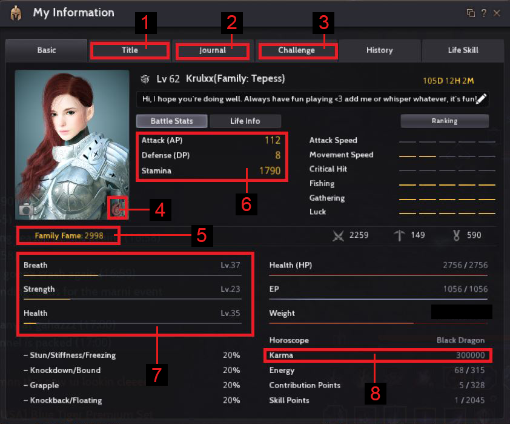
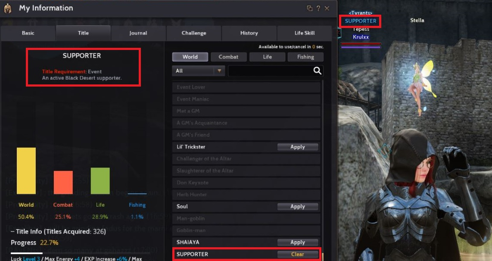
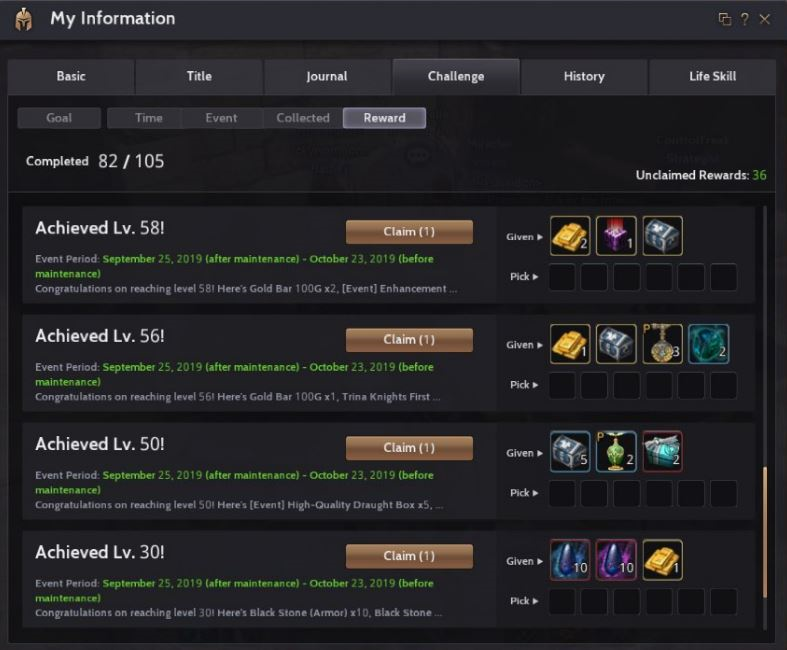

My Information

I pointed out some of the important things that I think new adventurers should know as early as possible. You can access My Information using P button.
1. Set your in-game title to spice up your character.

2. Your journal gives you the list of the players who managed to kill you as well as your enhancement records.
3. The challenge tab shows you all the rewards you can get such as goal, time, event, play time rewards and level up rewards that is extremely helpful for new players so be sure to check this out!.

4. This is your character's failstack or FS, the higher your FS the higher chance of your gear to succeed. Every character can hold a failstack.
5. This is your Family Fame that determine how much silver you'll get as a daily reward. You can increase your family fame by making a lot of characters, leveling them up, doing life skills etc...
6. This is your Attack Power and Defense Power although you can see it if you press the i button I include this because it shows how much stamina you have. Stamina determines how far you can run and how many skills can you cast.
7. This shows your breath, strength, and health and each level gives you a significant amount of stats. To level up breath you need to walk and run, for strength you can consume "spirit essence of earth" or juice that PA likes to give away once in a while, for health you just need to eat food buffs like serendia meal, kamasylvian meal. Overtime it will reflect how much you've been using your character.
8. If you grind and pvp a lot, you might want to watch your karma often. Killing someone in all server except ARSHA (PVP server) will decrease your karma and if you reach a negative karma you will become a red player. (NOTE: More About Being a Red Player soon.)
Now that you know more about the quests and your character it's time to customize your UI. How-to?